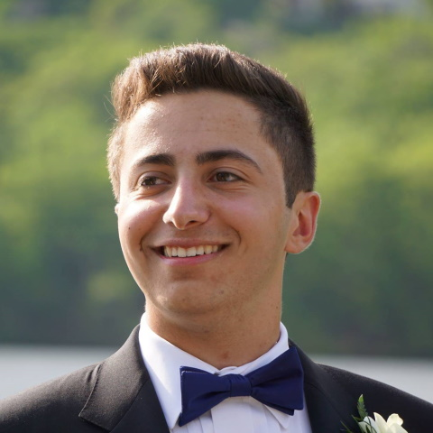

About

I'm an undergraduate junior at Duke University's Pratt School of Engineering. My majors are Electrical and Computer Engineering and Computer Science.
Previously, I was the Valedictorian of the Morris Hills High School Class of 2018.
My interests include web development, mobile development, mobile hardware, PC hardware, car ECUs, car infotainment, and unmanned aerial systems (UAS).